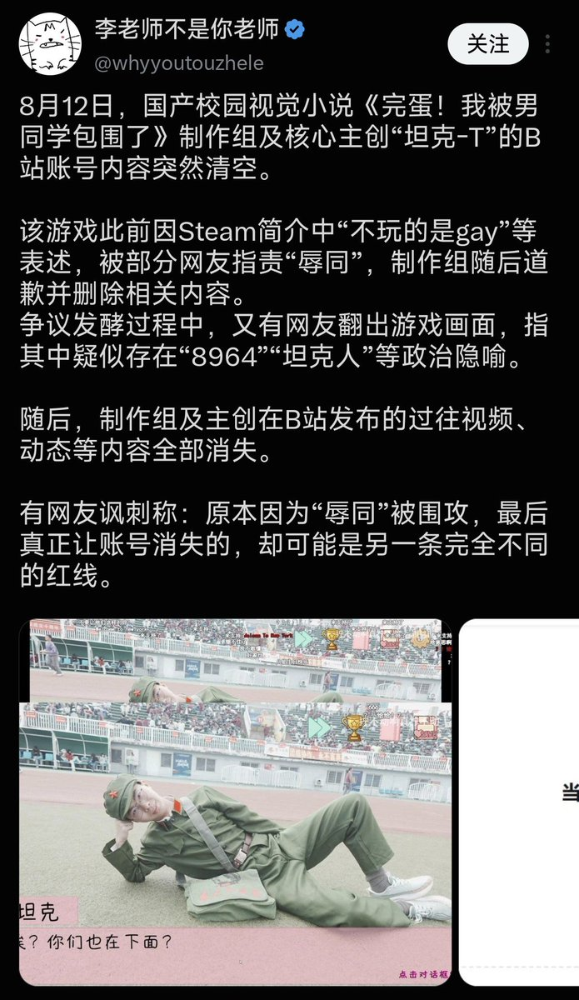
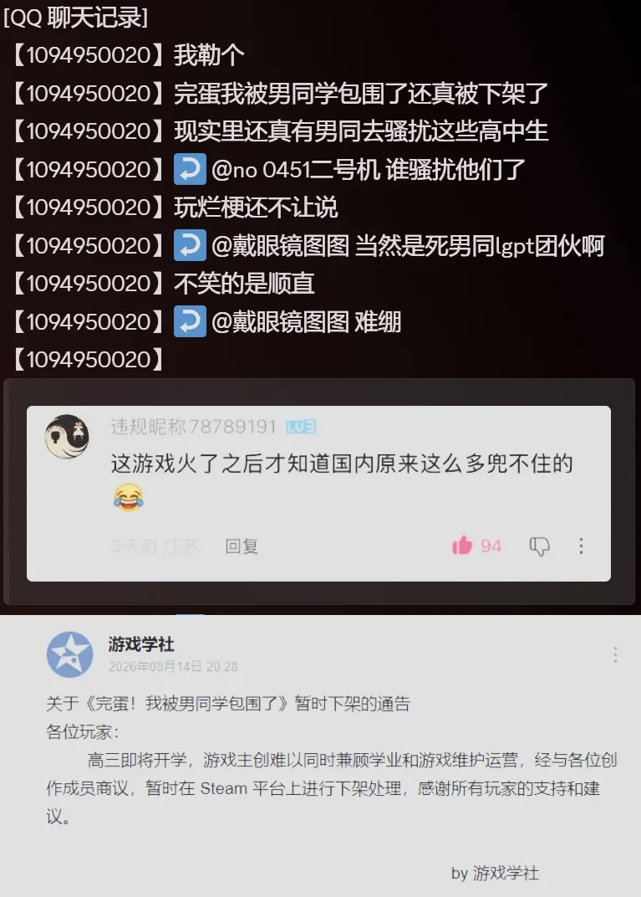

洛铃🦊Magic Caster
@LolingVerse
@CyberKanjousen 性少数抵制基本没啥用
同时另一变有更cursed的说法


サイバー環状線
@CyberKanjousen
原来不是学业压力，而是性少数抵制导致游戏下架啊😅
所以为什么不能是高中学校在向制作者施压呢？根据游戏学社的公告，制作者都是中国高中生，且场景皆在校内拍摄。那么中国高中什么尿性，应该没人不知道吧？而且游戏内的人物都是露脸的，学校轻而易举就能找上他们。
游戏确实遭到了性少数群体的抵制 https://t.co/0Pi62wFabn